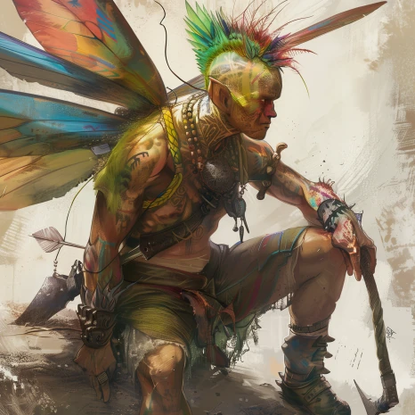

Luckbender
Once per session, after you or a willing ally within Close range makes an action roll, you can spend 3 Hope to reroll the Duality Dice.

Brawler Faerie Wildborne Level 7
Navigator, as she goes.
Once per session, after you or a willing ally within Close range makes an action roll, you can spend 3 Hope to reroll the Duality Dice.
You can fly. While flying, you can mark a Stress after an adversary makes an attack against you to gain a +2 bonus to your Evasion against that attack.
Your movement is naturally silent. You have advantage on rolls to move without being heard.
Spend 3 Hope to intimidate a target within Close range, making them temporarily Vulnerable.
Your barehanded attacks are as strong as any blade. You have a primary weapon called Brawler's Strike equipped while you have no other Active Weapons. It uses a trait of your choice, has Melee range, and deals d8+d6 physical damage using your Proficiency (both the d8 and d6 scale off your Proficiency). While this weapon is active, you gain a +1 bonus to your Evasion.
After rolling damage on a successful attack with a Melee weapon, you can mark a Stress to start a combo strike. When you do, roll your Combo Die and note the result, then continue rolling your Combo Die until the result of your latest roll is lower than the roll that preceded it. You deal extra damage equal to the total of all rolled Combo Die results on this attack. The results can't be modified by any means.
Your Combo Die starts as a d4. Once per tier, you can increase your Combo Die by one step as a level advancement option.
Gain a permanent +3 bonus to your Severe damage threshold.
When you succeed on an attack against a target, you can spend a Hope to throw the target within Close range or to force them to mark a Stress.
When you make an attack with a Melee weapon, you can spend any number of Hope to target an equal number of additional creatures within Melee range.
Once per rest when an adversary within Melee range forces you to mark any number of Hit Points, you can mark a Stress to force them to mark the same number of Hit Points.
When you critically succeed on a Melee weapon attack, you gain an additional Hope, clear an additional Stress, and gain a +1 bonus to your Proficiency for that attack.
When you take Severe damage, you can gain a Hope or clear a Stress.
When you choose not to equip armor, you have a base Armor Score of 3 + your Strength and use the following as your base damage thresholds:
Gain a bonus to your Evasion equal to half your Agility.
You use the full force of your body in a fight. On a successful attack using a weapon with a Melee range, gain a bonus to your damage roll equal to your Strength.
Mark a Stress to boost off a willing ally within Close range, fling yourself into the air, and perform an aerial attack against a target within Far range. You have advantage on the attack, add a d10 to the damage roll, and end your move within Melee range of the target.
During a short rest, you can choose a long rest downtime move instead. You can spend a Hope to let an ally do the same.
Once per rest, when you critically succeed on an attack, all allies within Very Close range can clear a Stress or gain a Hope.
When you're targeted by an attack made from beyond Melee range, you can mark a Stress to roll a d4 and gain a bonus to your Evasion equal to the result against the attack.
Name and describe your signature combat move. Once per rest, when you perform this signature move as part of an action you're taking, you can roll a d20 as your Hope Die. On a success, clear a Stress.
When 4 or more of the domain cards in your loadout are from the Bone domain, gain the following benefits:
Handfuls 1
Agility · Melee · 3d8 phy
Paired. Add this Secondary Weapon's tier + 1 to primary weapon damage to targets within Melee range
A gift from a former Saytr friend, Caelan.
Caelan was a roguish, adventurous satyr with an undeniable charm and a knack for finding (or creating) trouble wherever he went. Known for his music and storytelling, Caelan was also something of an artisan, crafting small items and trinkets for friends and lovers. He was a free spirit, with a laugh that could be heard across the woods and a mischievous gleam in his eye that hinted at a thousand untold stories.
Strength · Melee · 3d8+1 phy
Thistle’s sickle was given to him by Althir the Swift, a daring Eladrin ranger and one of his former lovers in the Feywild. Althir was known for his boundless energy, keen senses, and a charmingly impulsive spirit that matched Thistle’s.
You gain a +1 bonus to your next Strength Roll.
Clear 1d4 Stress.
Soul coins are about 5 inches across and about an inch thick, minted from infernal iron. Each coin weighs one third of a pound, and is inscribed with Infernal writing and a spell that magically binds a single soul to the coin. Because each soul coin has a unique soul trapped within it, each has a story. A creature might have been imprisoned as a result of defaulting on a deal, while another might be the victim of a night hag's curse.
Carrying Soul Coins. To hold a soul coin is to feel the soul bound within it- overcome with rage or fraught with despair. A player character can carry a number of soul coins equal to or less than its highest trait without penalty. A character who carries more soul coins than this limit suffers disadvantage on its duality and reaction rolls.
Using a Soul Coin. A soul coin has 3 charges. A creature carrying the coin can use its action to expend 1 charge from a soul coin and use it to do one of the following:
An infernal war machine's furnace consumes a soul coin instantly, expending all the coin's remaining charges at once and destroying the coin in the process. The soul trapped in the coin becomes trapped in the furnace instead, powering the infernal war machine for a duration determined by how many charges the soul coin had when it was consumed: 1 charge, 24 hours; 2 charges, 48 hours; 3 charges, 72 hours. If it's still trapped in the furnace when this duration ends, the soul is destroyed. Not even divine intervention can restore a soul destroyed in this manner.
Regardless of its size, a furnace can hold any number of souls, their screams of anguish audible out to a Far range. Each new soul fed to the furnace adds more fuel to the vehicle, allowing it to run longer.
Freeing a Soul. Casting a spell that removes a curse on a soul coin frees the soul trapped within it, as does expending all of the coin's charges without draining its essence or using it as fuel. The coin itself rusts from within and is destroyed once the soul is released.
A freed soul travels to the realm of the god it served or the outer plane most closely tied to its alignment (DM's choice). The souls of lawful evil creatures released from soul coins typically emerge from the River Styx as lemure devils.
A soul can also be freed by destroying the coin that contains it. A soul coin has immunity to all damage except that which is dealt by a hellfire weapon (or an infernal war machine's furnace). Freeing a soul from a soul coin is considered a good act, even if the soul belongs to an evil creature.
Hellish Currency. Soul coins are a currency of the Nine Hell s and are highly valued by devils. The coins are used among the infernal hierarchy to barter for favors, bribe the unwilling, and reward the faithful for services rendered.
Soul coins are created by Mammon and his greater devils on Minauros, the third layer of the Nine Hells, in a vast chamber where the captured souls of evil mortals are bound into the coins. These coins are then distributed throughout the Nine Hells to be used for goods and services, infernal deals, dark bargains, and bribes.
This item represents enough rations to feed a character for a few days. So long as a character has this item on them when they travel, they do not suffer from the effects of hunger or thirst. If a character does not have this item on their person during a long rest taken as part of a travel narrative, they may not take the clear stress downtime action. Generally speaking, a character does not need to carry multiple uses of this item. Each item represents multiple servings of foodstuff. After a long rest, however, a GM may spend a Fear in order to force a character to make an Instinct Roll with a difficulty based on the terrain. On a failure, the character runs out of rations and must consume this item.
As an action, you can splash the contents of this flask onto a creature within very close range. Make an agility attack against a target creature. If the target is a fiend or undead, it takes d12 magic damage, using your proficiency.
Clear 1d4 HP.
During downtime, you automatically clear a Stress.
Where did you spend time during your formative years that taught you, directly or indirectly, how to fight in the style you use?
What organization has vowed to kill you on sight, and what did you do to invoke their ire?
Who did you recently lose a fight to that you're desperate for a rematch against?
What is one thing we're both afraid of?
What do I rely on you for during our travels? How do you feel about it?
I still haven't forgiven you for something you said to me. What was it, and why did you say it?
An unofficial fan site for a private Daggerheart campaign.